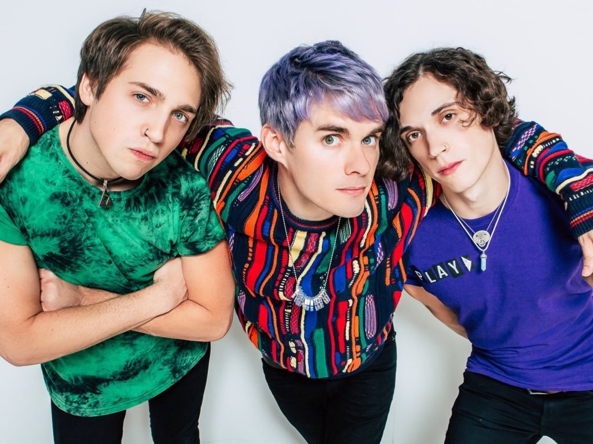

Who's in the band?
| Members | Role |
|---|---|
| Awsten Knight | Lead Singer/Guitarist |
| Otto Wood | Drummer |
| Geoff Wigington | Lead Guitarist |
Song Quotes
I like happy songs with titles that don't match at all. - Gloom Boys
I'm two faced from your double exposure. Stop right there, don't come any closer. - Royal
I wanna be a millionaire before I'm 30 but saying that out loud is probably gonna hurt me. - Watch What Happens Next